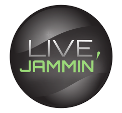

Qu'est ce que Live-Jamming ?
Live-Jamming a pour vocation de réunir des musiciens amateurs et de leur permettre de jouer de la musique ensemble.
S'inscrivant dans un contexte où la bande passante allouée au ménage est de plus en plus élevée (fibre optique) nous espérons permettre aux utilisateurs de Live-Jamming de pouvoir jouer de la musique en ligne, à plusieurs et en temps réél !
Les utilisateurs ne possédant pas une telle bande passante ne seront evidemment pas laissés de côté car Live-Jamming permet d'induire un intervalle entre chaque participant.
C'est à dire que le premier client jouera jusqu'a ce que son intervalle soit fini, il recevra alors le son joué par les autres lors de leurs intervalles et transmettra le sien.
Cela peut paraitre assez bizarre, mais il s'avére que, comme Ninjam nous l'a prouvé, les utilisateurs s'habituent rapidement à ce système et arrivent à enregistrer des morceaux de musique à plusieurs.
Live-Jamming est réalisé en partenariat avec l'école EPITECH dans le cadre de notre EIP (Inovative Project of Epitech).
Qui sommes-nous ?